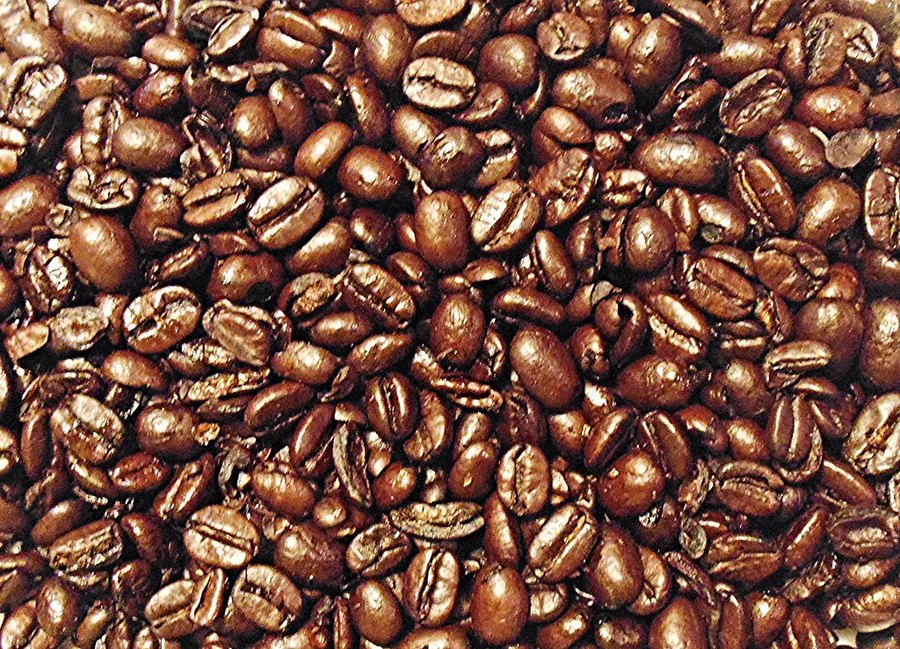

Vigor Boost vs Horse Boost: Same 82 mg Blend, Four Differences That Matter
Put the two Supplement Facts panels side by side and they're nearly twins. Nearly. Here's what actually separates them, and how to choose.

Key takeaways
- The core formula is the same. Vigor Boost and HorseBoost both carry an 82 mg proprietary blend of the same nine ingredients, one gummy a day, 30 per bottle.
- Vigor Boost has twice the caffeine: 10 mg per gummy against HorseBoost's 5 mg.
- HorseBoost has a little more sugar: 3 g per gummy against Vigor Boost's 2 g, and it's labeled strawberry flavored.
- Ingredient order differs. Ashwagandha sits second in Vigor Boost's blend and sixth in HorseBoost's, which hints at different proportions.
- Different distributors, separate checkouts. Vigor Boost lists Loja Experience Ltda of Largo, FL; HorseBoost lists Instituto Experience of Lakeland, FL.
Vigor Boost vs Horse Boost: they share the same 82 mg blend of nine botanicals and amino acids, so neither is meaningfully stronger. Vigor Boost has 10 mg of caffeine and 2 g of sugar per gummy. HorseBoost has 5 mg of caffeine, 3 g of sugar and a strawberry flavor, and comes from a different Florida distributor. Pick by caffeine tolerance and sugar.
If you've seen ads for both and assumed they're competitors, it's an easy mistake. The marketing looks different and the names sound different. The Supplement Facts panels tell another story. We read both labels line by line, and the differences come down to a short list.
For the full verdict on each product, see our Vigor Boost review and our HorseBoost review. This page is the head-to-head.

Vigor Boost: check today's price
A once-daily men's vitality gummy with maca, muira puama, tribulus and horny goat weed. Sold only on the official site, with a 60-day money-back guarantee.
See the official price →Are Vigor Boost and Horse Boost the same product?
Same blend, different products. Both labels list a proprietary blend of 82 mg containing muira puama extract, maca extract, catuaba extract, green tea extract, caffeine, L-arginine, tribulus terrestris, horny goat weed extract and ashwagandha. Both note the blend is equivalent to about 567 mg of dry powders. Both say one gummy once daily, 30 gummies per bottle, 10 calories each, produced in a GMP facility.
So in terms of active ingredients, buying one over the other won't get you a different set of herbs. What changes is the caffeine, the sugar, the flavor, the order in which the blend ingredients are listed, and the company that distributes it. Each of those can matter to a specific buyer, which is why the comparison is worth doing.
Why would two brands sell the same blend?
It's more common than most shoppers realize. Many supplements sold online are made by contract manufacturers that produce a stock formula and print it under several brand names. Each brand then runs its own ads, its own order page and its own customer service. Small tweaks, like a different flavor or caffeine level, give each version its own identity.
That isn't a scam in itself, and it isn't unique to these two gummies. It does mean that the brand name and the marketing tell you very little. The label tells you nearly everything, which is why this whole comparison is built on it.
Vigor Boost vs Horse Boost: side-by-side label comparison
Every row below comes from the printed labels, nothing else.
| Label detail | Vigor Boost | HorseBoost (Horse Boost) |
|---|---|---|
| Proprietary blend | 82 mg | 82 mg |
| Blend ingredients | Same nine | Same nine |
| Ingredient order in blend | Muira puama, ashwagandha, maca, catuaba, green tea, caffeine, L-arginine, tribulus, horny goat weed | Muira puama, maca, catuaba, green tea, caffeine, ashwagandha, L-arginine, tribulus, horny goat weed |
| Caffeine | 10 mg | 5 mg |
| Calories | 10 | 10 |
| Total sugar (all added) | 2 g | 3 g |
| Sodium | Not listed on the panel | 4 mg |
| Flavor | Natural flavors (fruit not named) | Natural strawberry flavor |
| Sweetener base | Corn syrup, cane sugar, sorbitol powder | Corn syrup, cane sugar, sorbitol liquid |
| Serving / count | 1 gummy daily; 30 gummies | 1 gummy daily; 30 gummies |
| Storage | 59–86 °F, bottle tightly closed | 59–86 °F, bottle tightly closed |
| Distributor on label | Loja Experience Ltda, Largo, FL | Instituto Experience, Lakeland, FL |
| Origin statement | Produced in a GMP facility | Made in the USA with globally sourced ingredients; GMP facility |
| Front-label claim | Supports men's vitality | Male vitality formula; vitality, stamina and daily energy support |
Neither label gives the amount of each blend ingredient. That's the biggest limitation of both products, and it's identical across them. Nobody, including us, can check either gummy's maca or ashwagandha dose against the research.
Does the ingredient order mean the formulas are different?
Possibly, and it's the most interesting detail on these two labels. US supplement rules require the ingredients in a proprietary blend to be listed in descending order by weight. If both labels follow that rule, the order tells you something the amounts don't.
In Vigor Boost, ashwagandha is listed second, right after muira puama. In HorseBoost it drops to sixth, after caffeine. Since HorseBoost's caffeine is 5 mg, that would put its ashwagandha at 5 mg or less. In Vigor Boost, ashwagandha comes before 10 mg of caffeine, so it should weigh at least 10 mg and likely more. In other words, Vigor Boost may contain noticeably more ashwagandha per gummy.
The same logic caps a few other ingredients. In both products, L-arginine, tribulus and horny goat weed come after caffeine. That puts each of them at no more than 10 mg in Vigor Boost and no more than 5 mg in HorseBoost. Those are small amounts compared with the doses used in research, which for L-arginine run into grams.
Two cautions on this reasoning. It depends on both labels being accurate and following the ordering rule, which we can't verify independently. And "more ashwagandha" is still an undisclosed amount, not a known dose. Treat it as a hint, not a measurement. Our Vigor Boost ingredients guide covers what each herb is traditionally used for.
What is the shared blend supposed to do?
Since both gummies contain the same ingredients, the evidence question is the same for both. In brief:
- Maca: a Peruvian root with a few small trials on sexual desire and mood, usually at 1.5 to 3 grams a day for several weeks.
- Ashwagandha: an Ayurvedic herb with trials on stress and sleep, and some smaller ones on testosterone and strength in men, typically at several hundred milligrams.
- Tribulus terrestris: popular for libido; studies in healthy men mostly found no rise in testosterone.
- Horny goat weed, muira puama and catuaba: long traditional use for vitality and libido, very little human trial data.
- Green tea extract and caffeine: alertness and energy; the caffeine is the only stated dose.
- L-arginine: a nitric-oxide precursor studied for blood flow at gram doses.
None of this research tested either gummy. Ingredient evidence isn't product evidence, and an 82 mg blend shared nine ways sits far below most study amounts. That's true of both labels equally, so it doesn't help you choose between them. It does help set expectations.
Which has more caffeine, Vigor Boost or HorseBoost?
Vigor Boost, at 10 mg per gummy, double HorseBoost's 5 mg. Both are small. A typical cup of brewed coffee has around 80 to 100 mg, so even Vigor Boost is roughly a tenth of a cup.
Small doesn't mean irrelevant for everyone. Some people are highly sensitive to caffeine, and 10 mg late in the day can be enough to notice. Others are already near their limit from coffee, tea and energy drinks. For those men, HorseBoost's 5 mg is the gentler option. For someone who drinks a pot of coffee before noon, the difference between the two gummies won't register.
If you take the gummy in the morning, as we generally suggest, the caffeine gap mostly disappears. It matters most if you plan to take it in the afternoon or evening. Our article on caffeine, focus and sensitivity explains why timing matters as much as the dose.
Which has less sugar?
Vigor Boost, at 2 g of total sugar per gummy, all of it added. HorseBoost has 3 g, also all added. Both list 10 calories.
A gram of sugar a day is not much. Over a month it's about 30 g, roughly the sugar in a can of soda. It matters for men who track sugar closely, such as those managing blood glucose or following a low-sugar diet, and for whom every logged gram counts. For everyone else, flavor and caffeine will be the bigger deciding factors.
What about flavor and texture?
HorseBoost names its flavor: natural strawberry. Vigor Boost's label lists natural flavors without naming a fruit. Beyond that, the gummy bases are close. Both use corn syrup, cane sugar, water, apple pectin, citric acid and sodium citrate, which means neither is a gelatin gummy. The only base difference we could see is the form of sorbitol: powder in Vigor Boost, liquid in HorseBoost.
Taste preference sounds trivial, but it isn't. A supplement you enjoy is a supplement you'll actually take every day for two months, and consistency is what a fair trial depends on.
How do price and guarantee compare?
Both brands publish the same package structure at the time of writing: 2 bottles at $79 each, 3 at $69 each with free US shipping, and 6 at $49 each with free US shipping. Both are one-time charges, and both offer a 60-day money-back guarantee on orders through their own official checkout. Shipping on the 2-bottle package can differ, so check each order page.
 2 Bottles · Starter
$79/bottle
Check Availability →
+ shipping
6 Bottles · Best Value
$49/bottle
Claim Discount →
Free US Shipping
2 Bottles · Starter
$79/bottle
Check Availability →
+ shipping
6 Bottles · Best Value
$49/bottle
Claim Discount →
Free US Shipping
 3 Bottles · Popular
$69/bottle
Claim Discount →
Free US Shipping
3 Bottles · Popular
$69/bottle
Claim Discount →
Free US Shipping
Prices shown are the manufacturer's published rates at the time of writing and can change without notice.
With one gummy a day, a bottle lasts a month either way, so cost per day is the same: about $2.63 on two bottles plus shipping, $2.30 on three and $1.63 on six, at the published prices. One practical point: the guarantees are separate. A Vigor Boost refund goes through Vigor Boost's seller, and a HorseBoost refund through HorseBoost's. Buy each from its own official page.
Who should choose Vigor Boost, and who should choose HorseBoost?
| If you… | Lean toward | Why |
|---|---|---|
| Are sensitive to caffeine or take it after lunch | HorseBoost | 5 mg of caffeine instead of 10 mg |
| Track sugar closely | Vigor Boost | 2 g of sugar instead of 3 g |
| Want ashwagandha higher in the blend | Vigor Boost | Listed second rather than sixth, if the order reflects weight |
| Prefer a named fruit flavor | HorseBoost | Labeled strawberry |
| Want a slightly bigger morning lift | Vigor Boost | Twice the caffeine, still small |
| Take nitrates, ED drugs or blood pressure medicine | Neither, without your doctor's OK | Both contain L-arginine |
For most men in good health taking it with breakfast, the honest answer is that the difference is small. Pick the one whose caffeine, sugar and flavor suit you, then give it a fair trial of at least two months.
Can you take Vigor Boost and HorseBoost together?
Don't. They contain the same nine ingredients, so taking both just doubles the blend, adds 15 mg of caffeine and 5 g of sugar, and makes it impossible to judge whether either is doing anything. There's no evidence a double dose works better. Choose one.
The same cautions apply to both. Talk to your doctor first if you take nitrates, erectile dysfunction drugs or blood pressure medicine, because of the L-arginine. Ashwagandha may interact with thyroid medication, sedatives and immune-suppressing drugs. And neither gummy treats erectile dysfunction. New or persistent erection problems deserve a doctor visit, since they can be an early sign of heart disease, diabetes or low testosterone. More on these topics is in our men's health section.
Verdict: Vigor Boost vs Horse Boost
These are sibling products built on the same blend, and neither is clearly better. Vigor Boost suits the man who takes it in the morning, wants a touch more caffeine and a bit less sugar, and may get more ashwagandha if the label order reflects weight. HorseBoost suits the man who is caffeine sensitive, likes a strawberry gummy, or prefers to take it later in the day.
Whichever you pick, buy it from its own official checkout so the 60-day guarantee applies, start on the day it arrives, and judge it on how you feel after several weeks. Don't expect either to work like a prescription, because neither is one.
If you've already tried one of them for a full two months and felt nothing, switching to the other is unlikely to change the result. The blend is the same. A better next step is a checkup: blood pressure, blood sugar, cholesterol and, if your symptoms fit, a testosterone test. That tells you far more than a second brand of the same gummy.
Vigor Boost: check today's price
A once-daily men's vitality gummy with maca, muira puama, tribulus and horny goat weed. Sold only on the official site, with a 60-day money-back guarantee.
See the official price →Frequently asked questions
Is HorseBoost stronger than Vigor Boost?
No. Both have the same 82 mg blend of the same nine ingredients. Vigor Boost has more caffeine (10 mg vs 5 mg), which may feel slightly more energizing, but that doesn't make the formula stronger. The blend amounts per ingredient aren't disclosed on either label.
Is Horse Boost the same as Horseboost?
Yes. The product's label spells it HorseBoost, as one word, and people search for it both ways. It's the strawberry-flavored men's vitality gummy distributed by Instituto Experience in Lakeland, Florida.
Are Vigor Boost and HorseBoost made by the same company?
The labels list different distributors: Loja Experience Ltda in Largo, Florida for Vigor Boost, and Instituto Experience in Lakeland, Florida for HorseBoost. Neither label names the manufacturer, only that the gummies are produced in a GMP facility. The shared blend and package structure suggest a common supplier, but we can't confirm it.
Can I switch from HorseBoost to Vigor Boost mid-trial?
You can, and since the blend is the same, it won't restart the clock on the herbal ingredients. You'd be changing only the caffeine, sugar and flavor. Keep in mind that each product's guarantee covers only its own official orders.
Which is better for older men, Vigor Boost or Horse Boost?
Age alone doesn't decide it. Older men are more likely to take blood pressure or heart medication, which matters for both products because of the L-arginine. Talk to your doctor first. If caffeine affects your sleep or heart rate, HorseBoost's lower 5 mg is the gentler choice.
Do Vigor Boost or HorseBoost contain gelatin?
No gelatin is listed on either label. Both use apple pectin as the gelling agent, along with corn syrup, cane sugar, water, sorbitol, natural flavors, citric acid and sodium citrate.
Is either one on Amazon?
Both are sold direct through their own official websites, and their guarantees cover official orders only. Marketplace listings can't be verified, and men's enhancement products are a category where the FDA has found counterfeit and tainted products.
Prefer the 2 g sugar, 10 mg caffeine version?
Vigor Boost is the lower-sugar, higher-caffeine sibling. Official orders carry a 60-day money-back guarantee; see current packages on the official site.
See Vigor Boost's official price →Related: Vigor Boost review · HorseBoost review · Vigor Boost ingredients · HorseBoost ingredients · Where to buy Vigor Boost